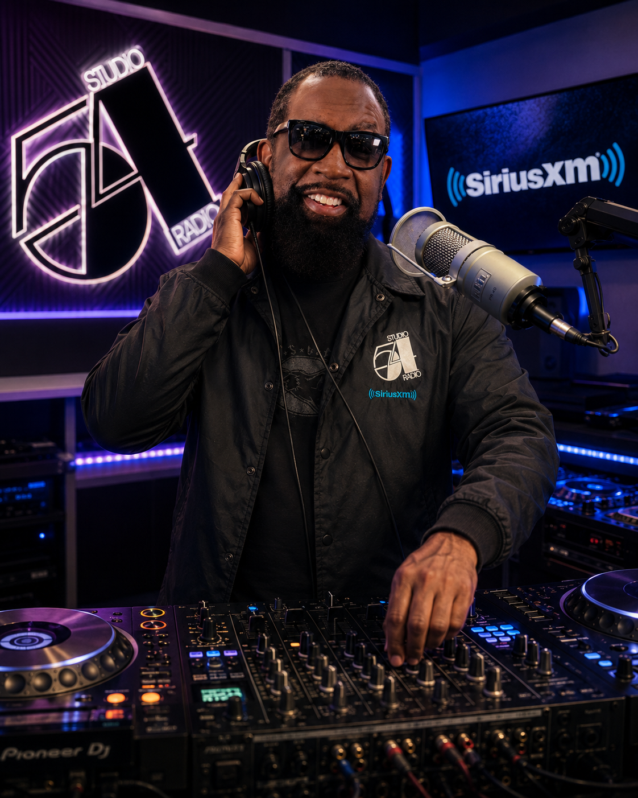
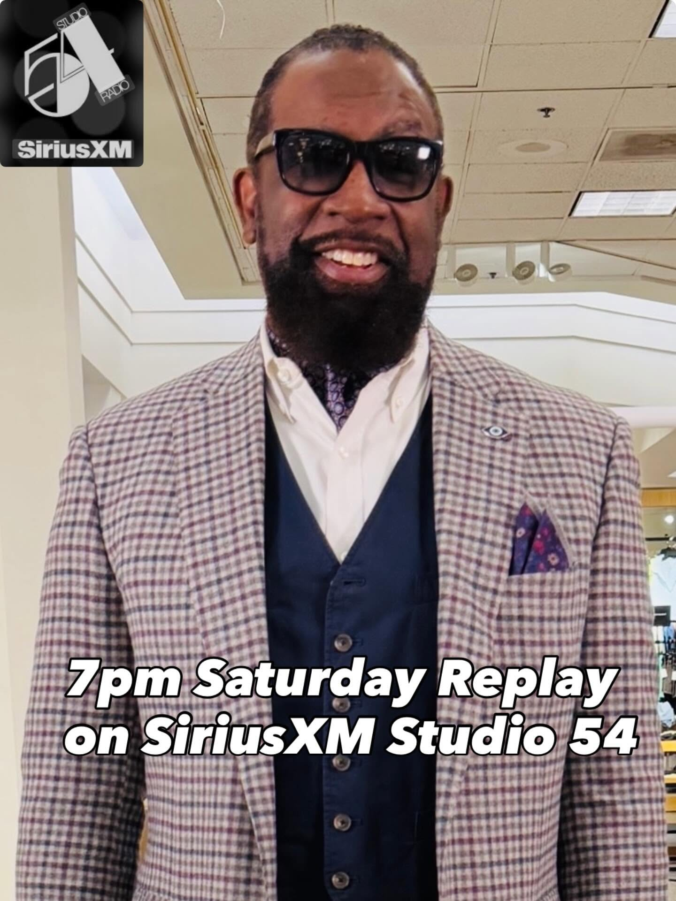
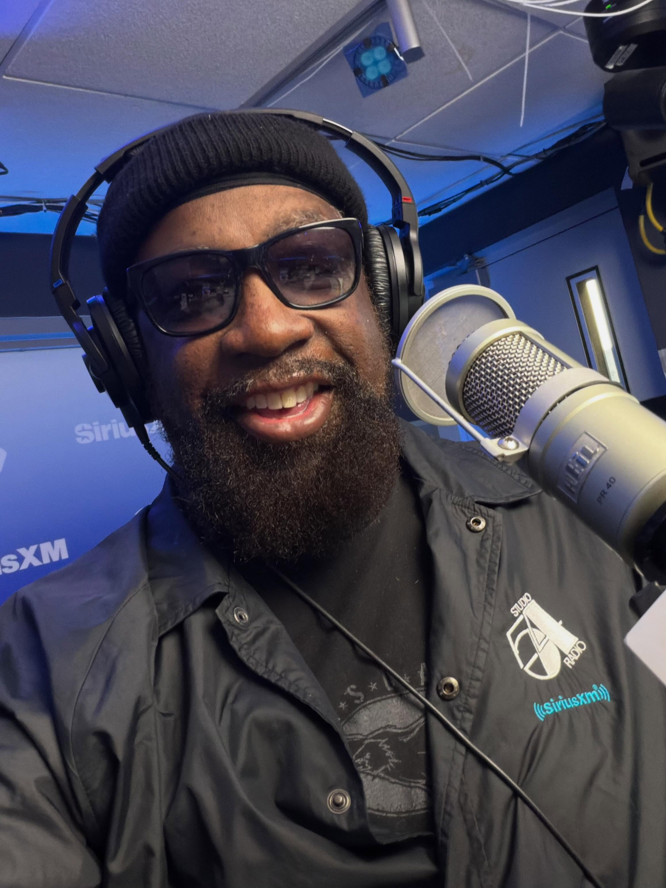

SiriusXM Studio 54 Radio
Studio 54 Radio • SiriusXM • DJ • Producer • Music Industry Veteran
Three decades of radio, club, house, disco, R&B, hip-hop, and dance music excellence.

DJ Sir Charles Dixon is a music industry veteran, radio personality, club DJ, producer, and promoter whose career spans more than three decades across the full spectrum of American popular music. Born and raised with a deep reverence for the culture of the DJ, Sir Charles has built a legacy rooted in craft, influence, and an unwavering commitment to the music.
His radio career is the stuff of legend. Sir Charles helped program and DJ one of the first Arbitron-rated mixshows in the Washington, D.C. market — a move that contributed directly to WPGC-FM's meteoric rise from #22 to #1 in the market in under three years. He went on to hold the mic at WBLS in New York City, one of the most storied urban radio stations in the country, where his open-format mixing style earned him a devoted audience and earned the station wider reach.
Ahead of his time in the digital media space, Sir Charles became the first R&B mixer and DJ consultant for Music Choice, bringing weekly mix series to millions of cable television viewers and listeners across the country.
His record industry connections run deep. He has held promotional roles at major labels including Tommy Boy, TVT, Columbia, MCA, and Pendulum/Elektra, helping build the infrastructure of radio promotions and mailing lists that became industry standards. Through his own company, Sir Charles Independent Productions (SCIP), founded in 2003, he has developed artists, crafted marketing campaigns, and consulted for both independent and major-label projects. SCIP is responsible for helping discover and develop Australian artist Che'Nelle — who went on to achieve platinum success in Japan — and for contributing to the promotion of Amerie's "One Thing," which landed in the Billboard Top 10 and earned a Grammy nomination.
Since 2021, Sir Charles Dixon has been a DJ on SiriusXM's Studio 54 Radio, where his #HousewerQ show blends classic and soulful house, disco, and dance music for a global audience. His sets are known for their fluidity, depth of catalog, and a storyteller's instinct for when to drop the right record at the right moment.
Sir Charles Dixon is not just a DJ — he is a living chapter of American music history.
Washington, D.C.
Helped program one of the first Arbitron-rated radio mixshows in D.C., driving WPGC from #22 to #1 in under three years — a landmark moment in urban radio history.
New York City
Mixed and DJ'd on one of New York's most iconic urban stations, bringing his open-format style to the world's most competitive radio market.
National Television
First R&B mixer and DJ consultant for Music Choice, producing weekly mix series that reached millions of cable television viewers across the United States.
Since 2021
Featured DJ on Studio 54 Radio, hosting #HousewerQ — spinning classic house, disco, soul, and dance music for a global satellite radio audience.
SCIP — Founded 2003
Entrepreneurial venture combining artist development, label consulting, and music marketing. Instrumental in launching the career of Che'Nelle and promoting Amerie's "One Thing."
Major & Independent Labels
Promotional roles at Tommy Boy, TVT, Columbia, MCA, and Pendulum/Elektra. Built radio promotions infrastructure and mailing list systems that became industry standards.


From the dance floor to the airwaves — explore Sir Charles Dixon's catalog of mixshow sessions and radio sets.
Classic and soulful house, disco, and dance — broadcast live on SiriusXM Studio 54 Radio.
▶ Open on SoundCloudDeep, soulful, and energetic house music sessions from Sir Charles Dixon's signature show.
▶ Open on SoundCloudArchive recordings from his legendary radio run at WBLS in New York City.
▶ Open on SoundCloudR&B, hip-hop, house, disco, go-go, pop — the full range of the Sir Charles sound.
▶ Open on SoundCloudAvailable for a wide range of music, entertainment, and industry engagements. Bring a music industry veteran to your event.
High-energy, open-format sets for nightclubs, lounges, and live venues.
Corporate events, private parties, galas, and upscale social occasions.
Guest mixshow appearances, syndicated content, and on-air collaboration.
Festival stages, brand activations, pop-ups, and headline DJ slots.
Radio format consulting, mixshow development, and music programming strategy.
Through SCIP — artist discovery, radio promotion, and marketing strategy for emerging talent.
Brand ambassador engagements, media appearances, and entertainment industry events.
Industry panels, keynotes, and mentorship for emerging DJs and music professionals.
For bookings, guest mixes, appearances, collaborations, and music industry opportunities.
Paste your GoHighLevel form embed code here to activate booking submissions.
In your GHL account: Sites → Funnels / Forms → Embed — copy the iframe snippet and replace this entire <div id="ghlFormEmbed"> block.